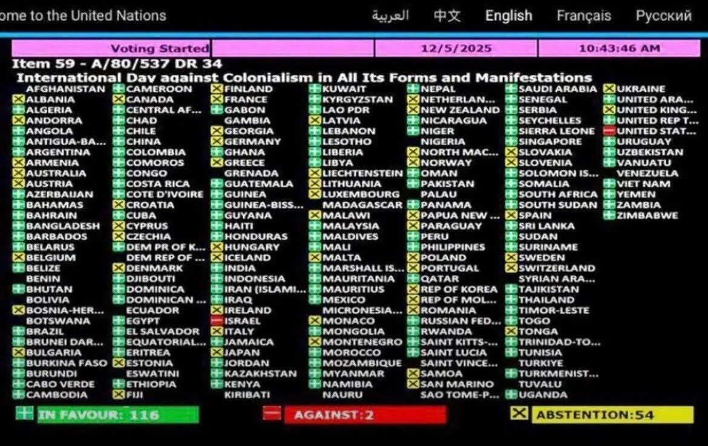

Actualité internationale
L’ONU crée une Journée internationale contre le colonialisme
Date indiquée par Facebook · 9 décembre 2025
Repères éditoriaux
Le 8 décembre 2025, l’Assemblée générale des Nations unies a adopté la résolution qui crée une journée internationale contre le colonialisme sous toutes ses formes et manifestations. Le texte a recueilli 116 voix pour, 2 contre et 54 abstentions.
Texte conservé avec la publication
L'Assemblée générale des Nations Unies vote en faveur de la création d'une journée internationale contre le colonialisme.
Sans surprise, les États-Unis et Israël ont voté contre.
Les autres puissances impérialistes, dont la France, se sont abstenues.

Sources
Archive rouge · export Facebook · AR-0002-FB-00935
À lire aussi · L'élan de la Libération de Paris · Le lien d’origine